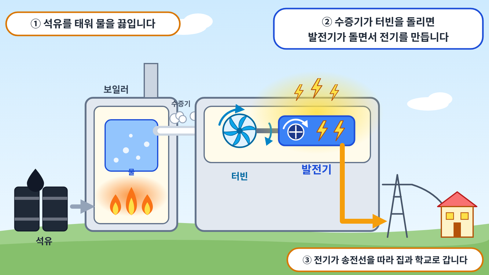

1석유는 무엇일까요?
석유는 땅속 깊은 곳에서 뽑아 올리는 검은색 액체 연료입니다. 수억 년 전 바다에 살던 매우 작은 생물들이 죽어 바다 밑바닥에 쌓인 뒤, 오랜 시간 높은 열과 압력을 받아 석유로 변했습니다. 이처럼 과거의 생물이 땅속에서 변해 만들어진 연료를 화석 연료라고 합니다.
땅속에서 뽑아 올린 그대로의 석유를 원유라고 합니다. 원유를 정유 공장에서 가열하면 휘발유, 경유, 등유, 중유 등으로 나뉩니다. 휘발유는 자동차의 연료로, 등유는 난로의 연료로 쓰이며, 플라스틱과 합성 섬유도 석유로 만듭니다.
예전에는 석유로 많은 전기를 만들었지만, 1970년대에 석유 가격이 크게 오르는 일이 두 차례 일어난 뒤로 석유 발전은 점차 줄어들었습니다. 오늘날 우리나라 육지에서는 석유로 전기를 거의 만들지 않습니다.
2석유로 어떻게 전기를 만들까요?

석유로 전기를 만드는 방법은 두 가지입니다. 첫째, 중유를 보일러 안에서 태워 물을 끓이는 방법입니다. 물이 끓으면 온도와 압력이 높은 수증기가 만들어집니다. 이 수증기가 터빈을 회전시키고, 터빈과 연결된 발전기가 함께 회전하면서 전기가 생산됩니다.
둘째, 엔진을 이용하는 방법입니다. 자동차의 엔진처럼 경유를 태워 엔진을 움직이고, 엔진이 발전기를 직접 회전시켜 전기를 만듭니다. 이 방법은 육지와 송전선이 연결되지 않은 섬에서 주로 사용합니다. 울릉도와 백령도 같은 섬에서는 배로 실어 온 경유로 엔진 발전기를 가동하여 섬 전체에 전기를 공급합니다.
3석유 발전의 좋은 점은 무엇일까요?
석유는 액체이므로 운반하고 저장하기 쉽습니다. 배나 차로 실어 먼 섬까지도 옮길 수 있습니다. 엔진 발전기는 크기가 작아 좁은 곳에도 설치할 수 있고, 필요할 때 빠르게 가동하거나 멈출 수 있습니다. 또한 날씨나 시간의 영향을 받지 않고 전기를 생산할 수 있습니다.
4석유 발전에서 생각해 볼 점은 무엇일까요?
석유를 태우면 이산화탄소와 대기 오염 물질이 배출됩니다. 또한 우리나라는 원유를 거의 모두 외국에서 수입하는데, 석유 가격은 세계 여러 나라의 상황에 따라 크게 오르내립니다. 석유를 배로 운반하다가 사고가 나면 바다로 기름이 흘러나와 바다 생물과 해안이 큰 피해를 입기도 합니다. 2007년 충청남도 태안 앞바다에서 일어난 기름 유출 사고가 대표적인 예입니다.